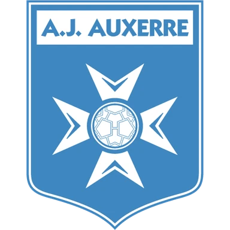

Ле-Ман — Монако итог матча 8 ноября
Статистика матча
- 19Удары5
- 5Удары в створ3
- 48 %Владение мячом52 %
- 8Угловые7
Данные ESPN.
- ТурнирЛига 1
Коротко о матче
Ле-Ман — Монако 1:1: команды разошлись миром.
По форме команды были близки: в пяти последних матчах у обеих по 1 победе. Слабое место — оборона: Ле-Ман — в среднем 2,0 пропущенного мяча за игру в этих пяти матчах.
Стоит учесть и площадку: дома Ле-Ман — 1 победа в 4 матчах, на выезде Монако — 2 победы в 5.
Форма: последние матчи
 Ле-Ман 1 победа из 5
Ле-Ман 1 победа из 5
 В2:1
В2:1 П1:3
П1:3 П0:3
П0:3
Н1:1 П0:2
П0:2
 Монако 1 победа из 5
Монако 1 победа из 5
 В2:1
В2:1- Н2:2
- П0:1
 Н1:1
Н1:1 П1:3
П1:3
Положение в таблице
| Команда | Место | И | В | Н | П | Голы | Очки |
|---|---|---|---|---|---|---|---|
| 15 | 10 | 1 | 5 | 4 | 12:19 | 8 | |
| 7 | 10 | 4 | 4 | 2 | 13:11 | 16 |
Другие матчи Лиги 1 в этот день
Куда дальше
Все прогнозы дня — в TelegramПрогнозы на КХЛ, НХЛ и футбол, итоги каждое утро. Бесплатно.
Открыть каналМатериалы носят информационный характер и не гарантируют результат. Реклама букмекеров на сайте не размещается. Сайт только для совершеннолетних (18+).